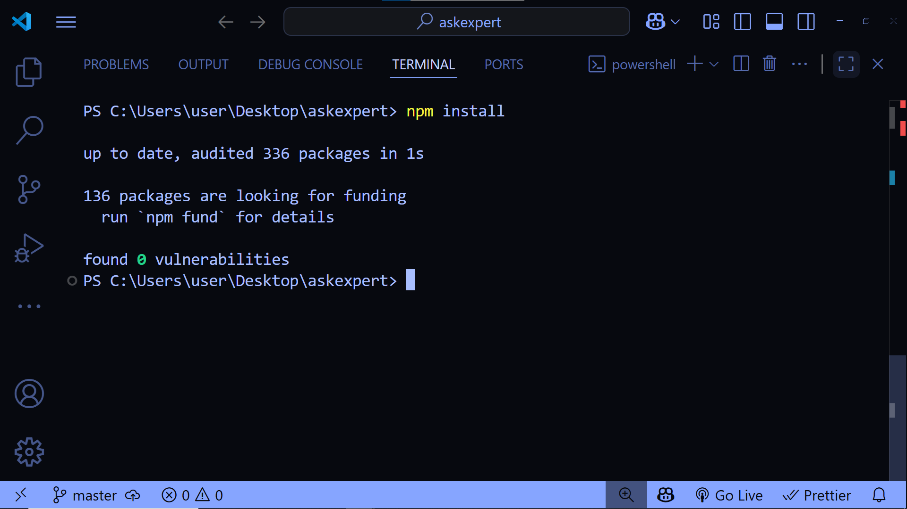
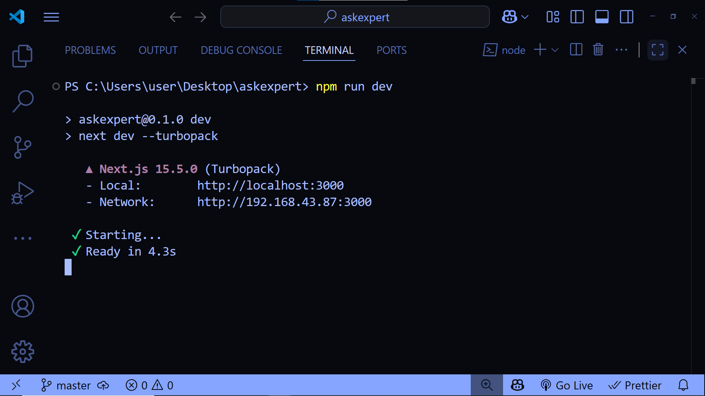
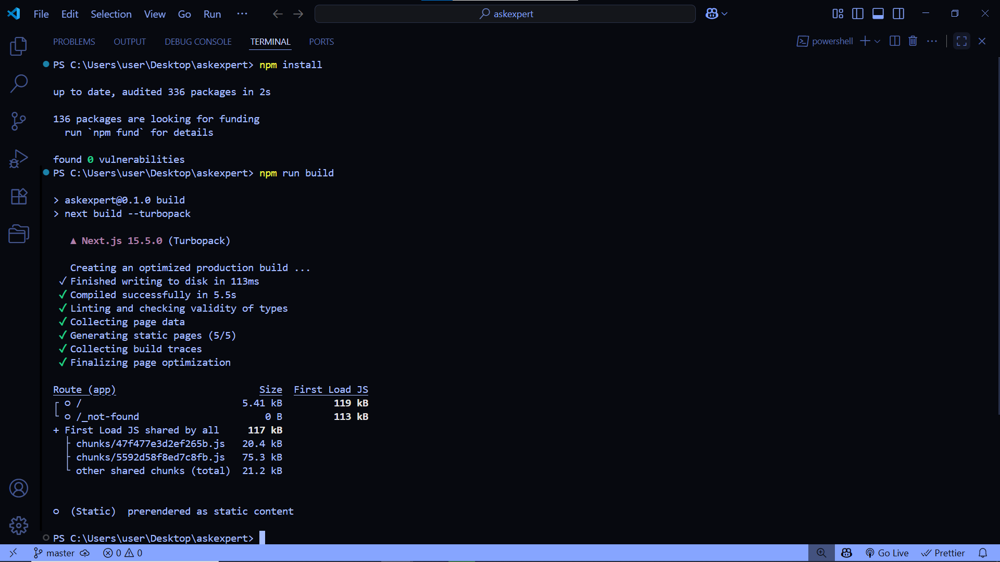
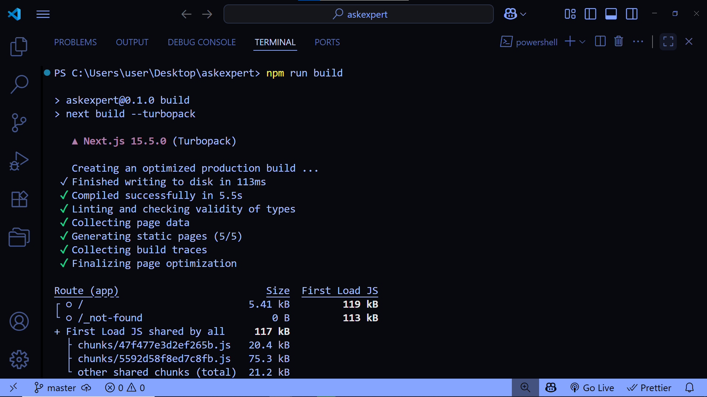

Table of Contents
1) Introduction
Thank you for purchasing Ask Expert. This doc explains how to install, edit, and update the template.
2) Requirements
- Node.js 18+ (LTS)
- npm or yarn or pnpm
- Basic React/Next.js/Tailwind knowledge
3) Installation
# install deps
npm install
# run dev
npm run dev
# open http://localhost:3000

4) Project Structure
Ask-expert/
├─ documentation/
│ ├─ images/
│ ├─ index.html
├─ public/ # static assets (images, icons, fonts)
├─ src/
│ ├─ app/ # App Router pages (or 'pages/' for Pages Router)
│ │ ├─ layout.(tsx|jsx)
│ │ ├─ page.(tsx|jsx)
│ ├─ ....
├─ tailwind.config.(js|ts)
├─ postcss.config.js
├─ package.json
└─ README.md5) Editing the Template
5.1 Pages
Create a new page at src/app/
5.2 Components
Most UI blocks are in src/assets/components/. Typical components in this template:
- BookingClient.tsx — section with booking clients
- BookingsClient.jsx — Bookings of clients
import ContactUs from "@/assets/components/contact";
export default function ContactUs()5.3 Assets
- Put images in
/publicand reference them as/Images/your-file.png. - Prefer
next/imagefor optimization.
5.4 SEO & Metadata
Update global meta in src/app/layout.tsx via Next.js metadata. Per-page titles can be set inside each page.
6) Tailwind Styling
Global config is in tailwind.config.js
// tailwind.config.js
module.exports = {
content: [
"./app/**/*.{js,ts,jsx,tsx}",
"./pages/**/*.{js,ts,jsx,tsx}",
"./components/**/*.{js,ts,jsx,tsx}"
],
theme: {
extend: {
keyframes: {
marquee: {
"0%": { transform: "translateX(0%)" },
"100%": { transform: "translateX(-50%)" }
}
},
animation: {
marquee: "marquee 25s linear infinite"
}
}
},
plugins: []
};
}7) Updating the Template
npm outdated
npm update
# for major bumps:
npm install
npm run build
8) Build & Deploy
Production build
npm run build
npm start # runs the compiled app
Deploy to Vercel (Recommended)
- Push your code to GitHub.
- Go to Vercel → New Project → Import Git Repo.
- Framework preset: Next.js. Keep defaults and click Deploy.
9) FAQ / Troubleshooting
- Styles not applied? Ensure all source paths are listed in
contentarray oftailwind.config.js. Restart dev server. - Images not showing? Place assets in
/publicand use absolute path starting with/. - Build errors? Remove
.next/& reinstall:rm -rf .next node_modules && npm i.